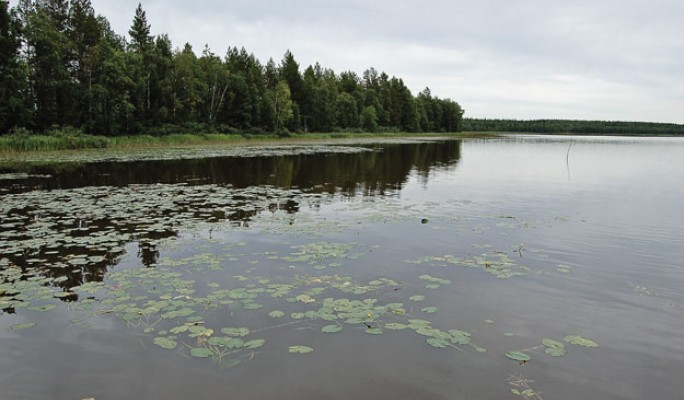
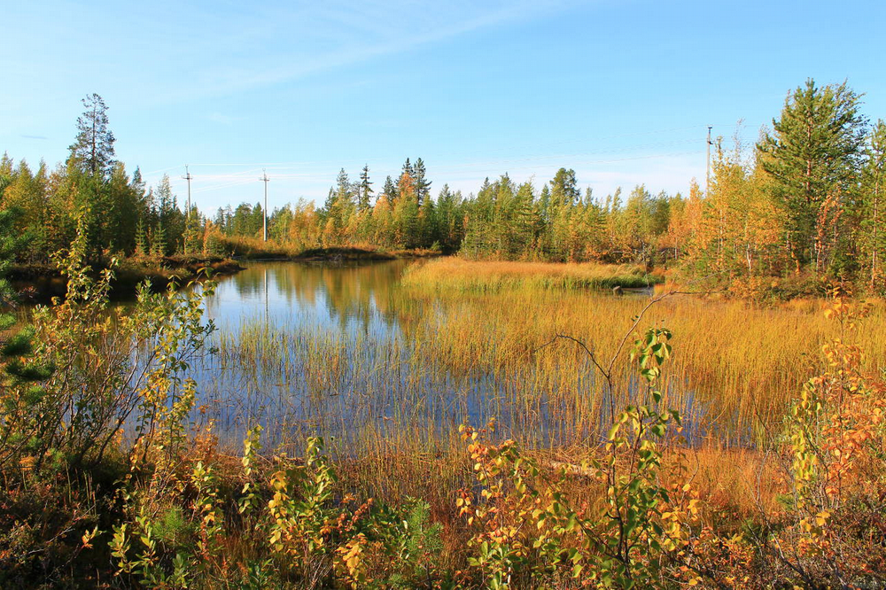

Территория РК из – за избыточного увлажнения богата поверхностными и подземными водами. Реки республики относятся к бассейнам трех морей. Бассейн реки Печоры принадлежит Баренцеву морю, к Белому морю – бассейны рек Вычегды и Мезени и к Каспийскому – реки Летка, Кобра, Березовка. Распределение речной сети, ее густота, характер течения, а также условия формирования стока и его величина изменяются в зависимости от климата и рельефа. В Коми встречаются реки равнинные, полугорные и горные.
Горный характер имеют верховья Печоры, Усы и их притоки, берущие начало на Урале. Они текут в узких долинах, обрамленных отвесными живописными скалами. В русле рек образуются пороги, водопады, скорость течения составляет до 3 м\сек. Вода горных рек прозрачная и холодная. Реки полугорного типа характерны для Предуралья и Тимана. Долины их широки, лишь при пересечении предгорных гряд – узкие, течение быстрое, русло порожистое. Равнинные реки – это Вычегда, Мезень, Луза, Печора и большинство их притоков. Все они текут в широких долинах, блуждая и образуя на пойме меандры и старицы. Скорость течения изменяется по временам года от 0,2 до 1,0 м\сек. Питание рек осуществляется за счет атмосферных осадков. Доля снегового питания составляет 50 – 60% в южных и центральных районах и возрастает до 70% на севере и Урале. Остальное питание за счет дождевых осадков и подземных вод.

Озер в республике более 50 тысяч. Но несмотря на многочисленность, их общая площадь не достигает 2 тыс. кв. км. Наиболее распространены озера – старицы (Донты, Кадамскме). Озера ледникового происхождения невелики и располагаются на водоразделах (Синдорские, Ямозеро). Карстовые озера встречаются в Предуралье и на Тимане, где подземные воды растворяют известняки, образуя провалы и заполняют их. Неравномерное оттаивание многолетней мерзлоты в тундре приводит к образованию многочисленных просадок в рельефе, которые заполняются водой, образуя неглубокие термокарстовые озера.

Большую площадь занимают болота. На севере и в центре республики преобладают верховые болота, в бассейне Средней Печоры – на первых надпойменных террасах – переходные болота. К поймам рек приурочены низинные болота. В республике имеются запасы подземных вод. По характеру их залегания различают: грунтовые воды – первый водоносный подземный горизонт, а также более глубокие межпластовые и артезианские. Наиболее крупные артезианские бассейны – Печорский и Усинский. На поверхность земли изливаются многочисленные минеральные источники в бассейнах Мезени, сысолы и Печоры. Многие из них целебны. За полярным кругом на Печрской равнине и в горах Урала в почвогрунтах и торфяниках развивается многолетняя мерзлота.
Размеры и континентальная протяженность территории Республики Коми, влияние Северного Ледовитого и Атлантического океанов, природного барьера Уральских гор на востоке создают неоднородность климата с юго-запада на северо-восток. Здесь характерно частое вторжение холодных арктических, относительно теплых атлантических и воздушных масс умеренных широт. Это вызывает повышенную циркуляцию атмосферы, доминирование циклонической погоды, резкие перепады давления и температуры воздуха, быструю смену направления и скорости ветров, обилие осадков в виде дождя и снега. Расположение в субарктическом (на крайнем севере и северо-востоке) и умеренном (на большей части территории) климатических поясах обуславливает климат с продолжительной, довольно суровой зимой и коротким, сравнительно прохладным летом. Среднегодовая температура воздуха на большей части территории имеет отрицательные значения, понижаясь с юга на северо-восток от +1 до -6,3 градусов. Среднегодовое количество осадков - 625 мм, из которых 60-70 процентов приходится на теплый период времени.